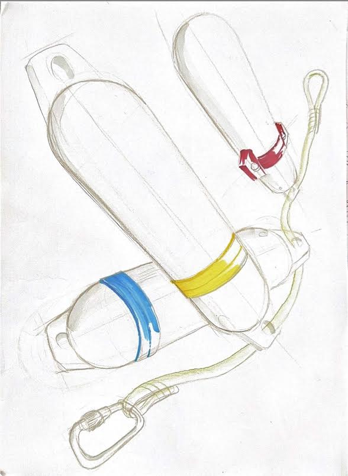

Retour au mécanisme
Mécanisme
Design
Les premières recherches de forme autour du bag, de la bague et du système d'attache.

Les premières recherches de forme autour du bag, de la bague et du système d'attache.
